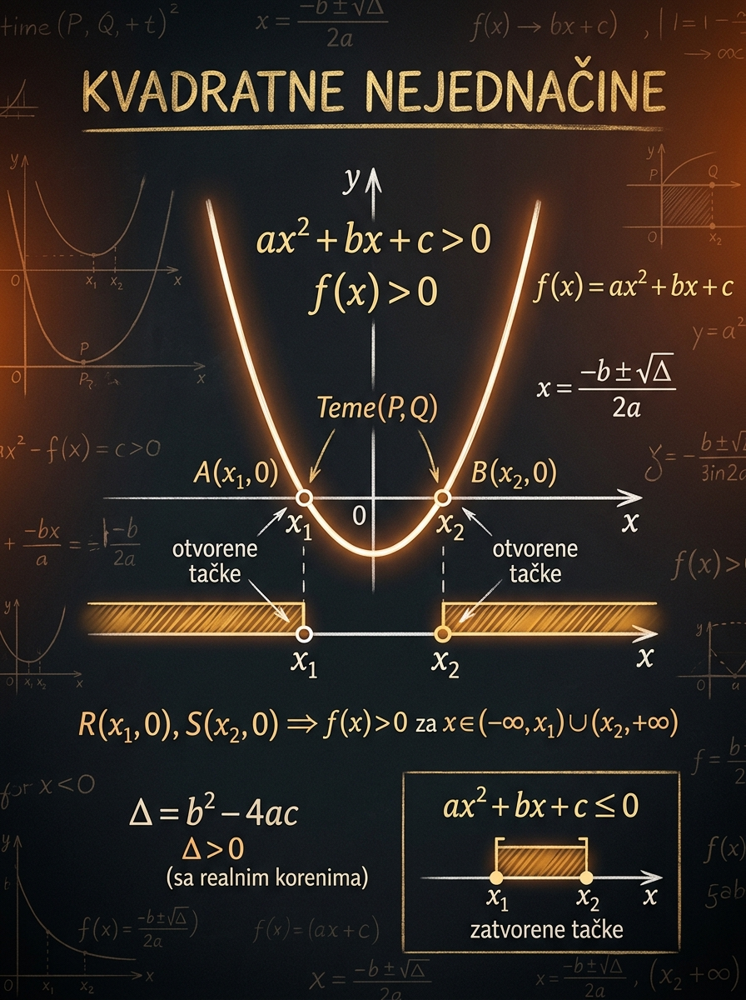

Šta učiš
Kako da rešiš nejednačine oblika \(ax^2+bx+c \gtrless 0\) i da ih povežeš sa grafikom parabole.
Kada na prijemnom vidiš kvadratnu nejednačinu, cilj nije da mehanički „nađeš korene pa nešto napišeš oko njih”. Cilj je da iz dve informacije, znaka koeficijenta \(a\) i položaja nula, odmah pročitaš gde je parabola iznad, a gde ispod \(x\)-ose. Tada rešenje postaje logično, a ne napamet naučen sablon.
Kako da rešiš nejednačine oblika \(ax^2+bx+c \gtrless 0\) i da ih povežeš sa grafikom parabole.
Da zaboraviš da se kod \(a<0\) raspored znakova obrće, ili da pogrešno uključiš krajeve intervala.
Parametarski zadaci tipa „odredi \(m\) tako da je trinom uvek pozitivan” ili „uvek nepozitivan”.

Ova tema se na prijemnom javlja direktno, ali i kao skriven korak posle smene, faktorizacije ili sređivanja složenijeg zadatka. Učenik koji vidi sliku parabole rešava brže i sigurnije od učenika koji pamti samo jednu šemu.
Čim znaš da li je parabola otvorena naviše ili naniže i gde seče \(x\)-osu, znaš i raspored znaka celog trinoma.
Kada vizuelno povežeš trinom sa parabolom, manje su šanse da zameniš „unutra” i „spolja”, ili da zaboraviš krajeve.
Uslovi tipa „uvek pozitivno” i „uvek negativno” praktično su test da li razumeš \(\Delta\), smer otvaranja i dodir sa \(x\)-osom.
Umesto da razmišljaš samo o simbolima \(>\), \(<\), \(\ge\) i \(\le\), posmatraj funkciju \(f(x)=ax^2+bx+c\). Zadatak je da pronađeš sve one vrednosti \(x\) za koje je \(f(x)\) pozitivna, negativna, nenegativna ili nepozitivna.
Standardni oblik je
Najvažnije je da trinom bude sveden na jednu stranu, a nula na drugu.
Ako rešavaš \(ax^2+bx+c>0\), pitaš se: za koje \(x\) je vrednost funkcije iznad nule? Kod \(ax^2+bx+c\le 0\) pitaš se gde je grafik na ili ispod \(x\)-ose.
Nule trinoma su preseci parabole sa \(x\)-osom. Znak \(a\) govori da li se parabola otvara naviše ili naniže. Te dve informacije daju kompletnu sliku znaka.
Po pravilu je to skup realnih brojeva, najčešće jedan interval, unija dva intervala, ceo \(\mathbb{R}\), prazni skup ili ponekad samo jedna tačka.
Ovaj redosled je napravljen baš za prijemni: kratak je, sistematičan i čuva te od najčešćih grešaka. Ako ga dosledno primenjuješ, retko ćeš promašiti znak.
Prvo prebacuješ sve na jednu stranu da dobiješ oblik \(ax^2+bx+c \gtrless 0\). Tek tada čitaš koeficijente \(a\), \(b\), \(c\).
Izračunaj \(\Delta=b^2-4ac\). Ako postoje realne nule, obavezno ih poređaj kao \(x_1<x_2\).
\(a>0\) znači parabola naviše, \(a<0\) znači parabola naniže. Ovo odlučuje koji delovi su pozitivni, a koji negativni.
Kada postoje dve nule, realna osa se deli na tri dela: levo od \(x_1\), između \(x_1\) i \(x_2\), i desno od \(x_2\).
Kod \(>\) i \(<\) nule se ne uključuju. Kod \(\ge\) i \(\le\) uključuju se samo ako stvarno zadovoljavaju nejednakost, a kod kvadratnog trinoma to su upravo nule.
Ne. Prvo ih poređaš: \(x_1=1\), \(x_2=5\). Interval uvek pišeš od manjeg ka većem broju, dakle \((1,5)\).
Ovo je srce lekcije. Kada te pita neko „kako znaš da je rešenje spolja”, pravi odgovor nije „tako se pamti”, nego: „zato što je parabola otvorena naviše i seče osu u dve tačke”.
Pozitivno je spolja, negativno unutra. Ovo je najčešći „osnovni” slučaj na prijemnom.
Raspored je obrnut u odnosu na prethodni slučaj, baš zato što se smer otvaranja promenio.
Zato je za \(f(x)>0\) rešenje \(\mathbb{R}\setminus\{x_0\}\), dok je za \(f(x)\le 0\) rešenje samo \(\{x_0\}\).
Ovde je za \(f(x)<0\) rešenje \(\mathbb{R}\setminus\{x_0\}\), a za \(f(x)\ge 0\) samo tačka dodira.
Ovo je tipičan model za zadatak „odredi parametar da trinom bude strogo pozitivan za svako realno \(x\)”.
Ovo je „negativna” analogija prethodnog slučaja i jednako je važna u parametarskim zadacima.
Zato što u tački \(x=0\) važi \(x^2=0\). Dakle, „nenegativno” može važiti za sve realne brojeve, a „strogo pozitivno” ne mora.
Ovo je jedan od najvažnijih prijemnih šablona. Formulacija „za svako realno \(x\)” znači da ne tražiš samo poneki interval, nego globalno ponašanje cele parabole.
Parabola mora biti otvorena naviše i ne sme ni da dotakne \(x\)-osu.
Dozvoljeno je da parabola dodirne osu u jednoj tački, ali ne i da je seče.
Parabola je otvorena naniže i cela mora ostati ispod \(x\)-ose.
Dodir sa osi je dozvoljen, ali sečenje nije.
Ako je \(a>0\), za velike \(|x|\) trinom raste ka \(+\infty\). Zato samo tada postoji šansa da bude svuda pozitivan ili nenegativan. Ako je \(a<0\), za velike \(|x|\) ide ka \(-\infty\), pa tada može biti svuda negativan ili nepozitivan.
Ako je \(\Delta=0\), parabola dodiruje \(x\)-osu u jednoj tački. U toj tački je vrednost nula, pa stroga nejednakost ne može važiti za svaki realan broj.
Nije dovoljan zato što kod \(\Delta=0\) postoji tačka u kojoj je trinom jednak nuli. To je dobro za \(\ge 0\), ali nije dobro za \(>0\).
Ovaj deo je tu da spoji algebru i sliku. Nule se ovde prikazuju približno decimalno, jer laboratorija služi intuiciji; u rešenju zadatka i dalje pišeš tačan oblik kad god je moguć.
Za dobru intuiciju gledaj istovremeno gde je parabola u odnosu na \(x\)-osu i koje delove brojevne prave boji narandžasti pojas.
Prazan narandžasti pojas znači da nejednačina nema rešenja. Popunjen pojas od ivice do ivice znači da je rešenje celo \(\mathbb{R}\).
\(\Delta=1\)
\(\text{Dve realne nule}\)
\[ S=(-\infty,2)\cup(3,\infty) \]
Parabola je otvorena naviše i seče \(x\)-osu u dve tačke, pa je pozitivna van intervala između nula.
Ovaj primer nije „uvek pozitivan” jer postoje dve realne nule.
U svakom primeru namerno pratimo isti redosled: sredi, pronađi nule ili odredi da ih nema, pogledaj znak \(a\), pa tek onda piši intervale.
Ne pamti napamet deset različitih rečenica. Zapamti nekoliko čvrstih principa i iz njih izvedeš svaki konkretan slučaj.
Bez ovog sređivanja ne možeš pouzdano čitati koeficijente i znak parabole.
\(\Delta>0\): dve nule, \(\Delta=0\): jedna dvostruka nula, \(\Delta<0\): nema realnih nula.
Kod nejednačina su nule prelomne tačke na brojevnoj pravoj.
Važi kada postoje dve realne nule \(x_1<x_2\).
Ovo je potpuno obrnuto od slučaja \(a>0\).
Ovo je najvažniji blok za parametarske zadatke.
Ovo nisu generički saveti. Ovo su tipične konkretne greške zbog kojih učenik izgubi poene i kad zna teoriju.
Kod \(>\) i \(<\) nule se ne uključuju. Kod \(\ge\) i \(\le\) uključuju se. Upravo na ovome pada mnogo tačnih postupaka.
Učenik tačno nađe nule, ali onda automatski napiše „pozitivno spolja”. To važi samo ako je \(a>0\).
To nije tačno. Ako je \(a>0\), onda je \(f(x)>0\) za svaki \(x\). Ako je \(a<0\), onda je \(f(x)<0\) za svaki \(x\).
Uvek pišeš \(x_1<x_2\). Interval mora da bude zapisan od manjeg ka većem broju.
Parametarski zadatak sa formulacijom „za svako realno \(x\)” traži globalni položaj cele parabole, a ne samo postojanje jednog intervala.
Na težim zadacima korisno je upisati jednu rečenicu: „\(a>0\), dve nule, zato je izraz pozitivan spolja.” To smanjuje rizik od omaške.
Na prijemnom se kvadratna nejednačina retko tretira kao „čist školski zadatak”. Često je deo većeg problema ili test preciznosti u radu sa parametrima.
Dobiješ npr. \(2x^2-7x+3\ge 0\) i od tebe se očekuje brzo, uredno rešavanje uz pravilne intervale i krajeve.
Posle zamene \(t=2^x\), \(\log_a x\) ili sličnog koraka često dobiješ upravo kvadratnu nejednačinu u novoj promenljivoj.
Traži se vrednost parametra tako da je trinom uvek pozitivan, uvek negativan ili da nema realnih nula. Tu se proverava pravo razumevanje.
Rešenja otvaraj tek kada probaš samostalno. Najveća korist dolazi iz toga da prvo sam napraviš skicu znaka parabole.
Ako znaš gde su nule i u kom smeru je parabola otvorena, cela priča o kvadratnoj nejednačini postaje pregledna. U tom trenutku zadatak više nije memorisanje, nego čitanje slike.
Pred prijemni ti ne treba duga teorija, nego nekoliko stabilnih oslonaca koje nećeš pomešati pod pritiskom vremena.
Uvek misliš o paraboli \(y=ax^2+bx+c\): gde je iznad, gde ispod i da li dodiruje \(x\)-osu.
Te dve stvari određuju gotovo sve: unutrašnje/spoljašnje intervale, ceo \(\mathbb{R}\), prazan skup ili jednu tačku.
Kod \(>\) i \(<\) nule ne ulaze, kod \(\ge\) i \(\le\) ulaze. To je sitnica koja odlučuje tačnost konačnog odgovora.
Zapamti blok uslova sa znakom \(a\) i diskriminantom. To je najbrži put kroz parametarske zadatke.
Dovoljna je vrlo gruba parabola sa nulama i smerom otvaranja. Često upravo skica vrati sigurnost u konačan izbor intervala.
Ova logika se odmah koristi u sistemima kvadratnih jednačina, eksponencijalnim i logaritamskim zadacima posle smene, kao i u parametrima.